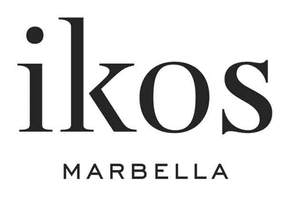

Trade Mark Journal No.2025/017 25 April 2025
UK00004172980 13 March 2025 (43)

- Class 43
- Hotels, hostels and boarding houses, holiday and tourist accommodation; resort lodging services; providing accommodation in hotels and motels; providing hotel and motel services; hotel accommodation services; arranging of accommodation for holiday makers; providing temporary accommodation in boarding houses; temporary accommodation; hotel reservations; boarding house bookings; reception services for temporary accommodation [management of arrivals and departures]; provision of information relating to hotels; providing online information relating to hotel reservations; providing on-line information relating to holiday accommodation reservations; temporary accommodation information, advice and reservation services; services for providing food and drink; restaurant and bar services; snack-bar services; hotel catering services; café services; food and drink catering for banquets; provision of facilities for exhibitions; providing exhibition facilities in hotels; provision of conference facilities; provision of conference, exhibition and meeting facilities; provision of trade show facilities [accommodation]; provision of event facilities and temporary office and meeting facilities; providing banquet and social function facilities for special occasions; provision of facilities for board meetings; consultancy services relating to hotel facilities; provision of facilities for conventions; hotels; motels; resort hotels; resort hotel services. .
IKOS HOTEL MANAGEMENT SINGLE MEMBER SOCIETE ANONYME
Representative: Page, White & Farrer Limited